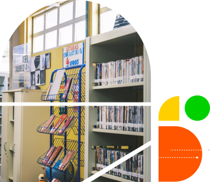

Créditos

Secretaria de Educação Profissional e Tecnológica — SETEC | Diretoria de Políticas e Regulação da Educação Profissional e Tecnológica — DPR | Coordenação-Geral de Planejamento e Avaliação da Educação Profissional e Tecnológica — CGPAEPT | Universidade Federal de Santa Catarina — UFSC | Centro de Ciências da Educação — CED | Laboratório de Novas Tecnologias — LANTEC | Núcleo de Estudos e Pesquisa Educação e Tecnologia Ético-Crítica — PROSA.
Consultoria Conteúdo | Sandra Terezinha Urbanetz
Design Educacional | Natalia Freitas Ramos
Ilustração | Anna Beatriz Prada Yu, Mateus Barbosa Gomes, Sarah Meireles Silva Vieira
Diagramação e Design Gráfico | Maria Eduarda Fantineli Cavassani
Revisão Textual | Amanda Zamboni
Licenciamento de Mídias | Luria Lopes de Andrade, Manuela Meireles Falcão
Supervisão de produção | Guilherme Chiappa
Design de interface | Diego França Vieira
Programação | Francisco Fernandes Soares Neto
Como citar?

BRASIL. Ministério da Educação (MEC). Secretaria de Educação Profissional e Tecnológica (SETEC). Trabalho de Conclusão de Curso - TCC III (Gestão). Brasília, DF, 2025. Este conteúdo é licenciado com a licença Creative Commons - Atribuição-NãoComercial-CompartilhaIgual 4.0 Internacional.
Todo o conteúdo e os elementos que o compõem, exceto quando indicado em contrário, podem ser utilizados ou remixados para quaisquer fins não comerciais, desde que os créditos sejam atribuídos e que as novas criações sejam licenciadas sob termos idênticos. Para atribuição, pedimos que seja citada a fonte de todo o conteúdo utilizado, com link para este material ou para o site ou plataforma onde você o encontrou na web.
PRESIDENTE DA REPÚBLICA
Luiz Inácio Lula da Silva
MINISTRO DE ESTADO DA EDUCAÇÃO
Camilo Sobreira de Santana
SECRETÁRIO DE EDUCAÇÃO PROFISSIONAL E TECNOLÓGICA
Marcelo Bregagnoli
DIRETORA DE POLÍTICAS E REGULAÇÃO DA EDUCAÇÃO PROFISSIONAL E TECNOLÓGICA
Patrícia Barcelos
COORDENAÇÃO-GERAL DE PLANEJAMENTO E AVALIAÇÃO DA EDUCAÇÃO PROFISSIONAL E TECNOLÓGICA
Sandra Grützmacher
COORDENADORA DA POLÍTICA NACIONAL DE FORMAÇÃO DE PROFISSIONAIS PARA A EPT E DO CURSO DE PÓS-GRADUAÇÃO LATO SENSU EM GESTÃO NA EPT
Simone Medeiros
EQUIPE TÉCNICA DA CGPA
Ana Clara Ribeiro Dara
Flávia Helena Saraiva Xerez
Renata Oliveira de Barcelos
Simone Medeiros
UNIVERSIDADE FEDERAL DE SANTA CATARINA (UFSC)
Pró-Reitoria de Extensão — PROEX
Centro de Ciências da Educação — CED
Laboratório de Novas Tecnologias — LANTEC
Núcleo de Estudos e Pesquisas em Educação e Tecnologia Ético-Crítica — PROSA
PROJETO RECURSOS EDUCACIONAIS DIGITAIS PARA FORMAÇÃO PROFISSIONAL E TECNOLÓGICA NA CONTEMPORANEIDADE
COORDENAÇÃO GERAL DO PROJETO
Marcelo Gules Borges
COORDENAÇÃO ADJUNTA
Cristiane Dall’ Cortivo Lebler
Elizando Maurício Brick
COORDENAÇÃO DE EDUCAÇÃO PROFISSIONAL E TECNOLÓGICA
Lucília Regina de Souza Machado
COORDENAÇÃO DE EDUCAÇÃO PROFISSIONAL E TECNOLÓGICA E EDUCAÇÃO A DISTÂNCIA (EaD)
Luciane Penteado Chaquime
SUPERVISÃO GERAL
Francisco Fernandes Soares Neto
EQUIPE DE SUPERVISÃO
Guilherme Chiappa
Pedro Ricardo Bin
Laura Alves Sebastião
Laura Schefer Magnus
Leticia de Souza Custódio
EQUIPE ADMINISTRATIVO FINANCEIRA
Homero Farias
Kauane Helena Nascimento Felix
Mayza de Moura Teles
EQUIPE DE CONSULTORIA CONTEÚDO
Ana Lúcia Sarmento Henrique
Antônio Almerico Biondi Lima
Benedita Alcidema Coelho Dos S Magalhães
Clarice Monteiro Escott
Dante Moura
Gabriel Grabowski
Jennifer de Carvalho Medeiros
Jorge Lucas Simões Minella
Lara Souza Benedet
Luciana Penteado Chaquime
Lucília Regina de Souza Machado
Mad Ana Desiree Ribeiro de Castro
Maria Cristina Caminha de Castilhos França
Mariglei Severo Maraschin
Joseany Rodrigues Cruz
Josimar de Aparecido Vieira
Raquel Quirino
Ricardo Antonio Rodrigues
Ronaldo Marcos de Lima Araujo
Sandra Terezinha Urbanetz
Simone Costa Andrade dos Santo
Wanderley Azevedo de Brito
EQUIPE DE CRIAÇÃO
Eduarda Boing Pinheiro
Felipe Ramos Lima
EQUIPE DE PESQUISA
Amanda Fiorini
Camila de Azevedo Gibbon
Gabriela Dagostini Contreiras Rodrigues
Lucelia da Silva Almeida
Rodrigo Antonio de Mattos Toso
EQUIPE DE REDAÇÃO E REVISÃO TEXTUAL
Ariadne Toledo Nunes Pereira
Catharina Vogel de Carvalho
Helena Maraschin Taufer
Laura Alves Sebastião
Milena Leão
Vitória Rodrigues Porto
EQUIPE DE DESIGN EDUCACIONAL
Isadora Silva Rodrigues
Janaina Colling Fockink
Julia do Nascimento Bertiotti
Lucas Ribeiro Bonatto
Luiza Amarilho de Souza
Maria Luiza de Aguiar
Manuela Meireles Falcão
Natalia Freitas Ramos
Valquíria Machado Cardoso
EQUIPE DE DESIGN GRÁFICO
Ana Luiza Moreira Pacheco de Souza
Catherine Pacher Schultz
Eduardo Pereira Martins Reis
Gabriel Delmondes Pinheiro
Gabriel Fernandes dos Santos
Giulia Cordeiro
Gustavo dos Anjos Ribeiro
Igor Henrique da Silva
Íris Malta da Silva
Júlia Matias Martins
Laura Schefer Magnus
Laura Suzin Araujo
Leticia de Souza Custódio
Maria Eduarda Fantineli Cavassani
Maria Luisa Manica Soledade
Matheus May de Paula
EQUIPE DE ILUSTRAÇÃO
Giuliano Vieira Benedet
Julia Cipriani Prada
Sarah Meireles Silva Vieira
EQUIPE DE LICENCIAMENTO
Felipe Ramos Lima
EQUIPE DE PROGRAMAÇÃO
Bianca Martins Carlsen
Diego França Vieira
Francisco Fernandes Soares Neto
Leonardo Luiz de Oliveira
Sther Mendonça Condé de Souza